Using React in Visual Studio Code
React is a popular JavaScript library developed by Facebook for building user interfaces. The Visual Studio Code editor supports React.js IntelliSense and code navigation out of the box.
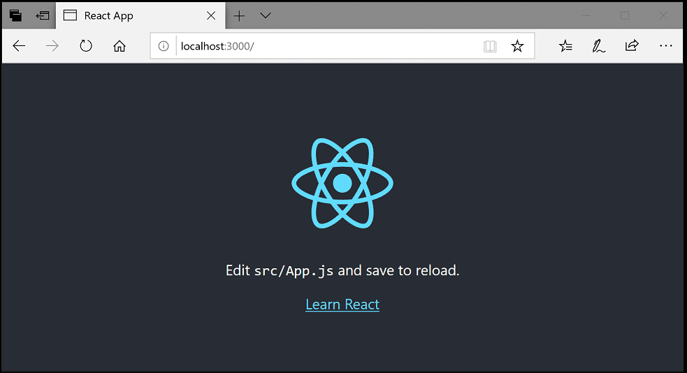
Welcome to React
We'll be using the create-react-app generator for this tutorial. To use the generator as well as run the React application server, you'll need Node.js JavaScript runtime and npm (Node.js package manager) installed. npm is included with Node.js which you can download and install from Node.js downloads.
Tip: To test that you have Node.js and npm correctly installed on your machine, you can type
node --versionandnpm --versionin a terminal or command prompt.
You can now create a new React application by typing:
npx create-react-app my-app
where my-app is the name of the folder for your application. This may take a few minutes to create the React application and install its dependencies.
Note: If you've previously installed
create-react-appglobally vianpm install -g create-react-app, we recommend you uninstall the package usingnpm uninstall -g create-react-appto ensure that npx always uses the latest version.
Let's quickly run our React application by navigating to the new folder and typing npm start to start the web server and open the application in a browser:
cd my-app
npm start
You should see the React logo and a link to "Learn React" on http://localhost:3000 in your browser. We'll leave the web server running while we look at the application with VS Code.
To open your React application in VS Code, open another terminal or command prompt window, navigate to the my-app folder and type code .:
cd my-app
code .
Markdown preview
In the File Explorer, one file you'll see is the application README.md Markdown file. This has lots of great information about the application and React in general. A nice way to review the README is by using the VS Code Markdown Preview. You can open the preview in either the current editor group (Markdown: Open Preview ⇧⌘V (Windows, Linux Ctrl+Shift+V)) or in a new editor group to the side (Markdown: Open Preview to the Side ⌘K V (Windows, Linux Ctrl+K V)). You'll get nice formatting, hyperlink navigation to headers, and syntax highlighting in code blocks.
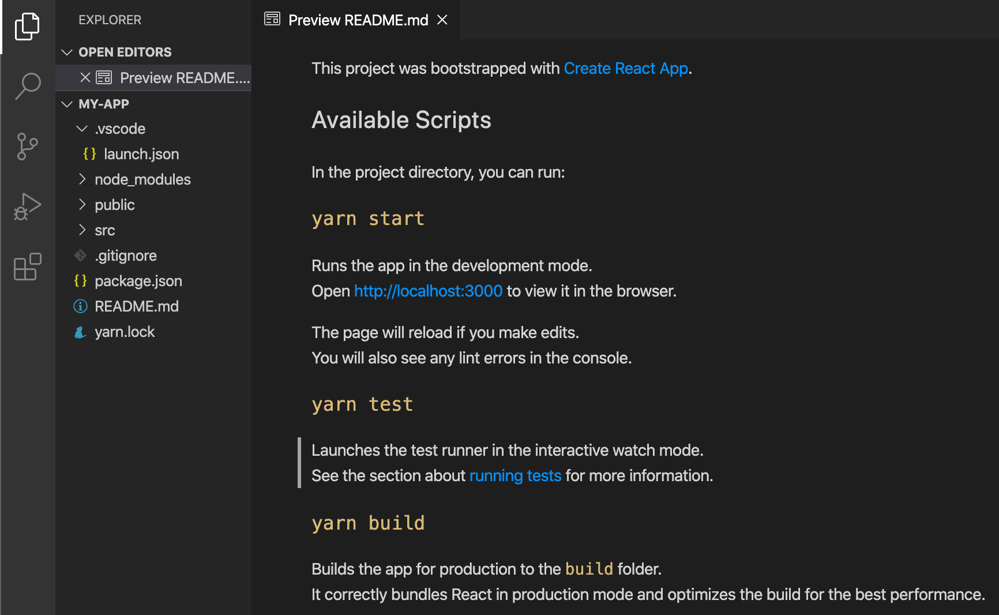
Syntax highlighting and bracket matching
Now expand the src folder and select the index.js file. You'll notice that VS Code has syntax highlighting for the various source code elements and, if you put the cursor on a parenthesis, the matching bracket is also selected.
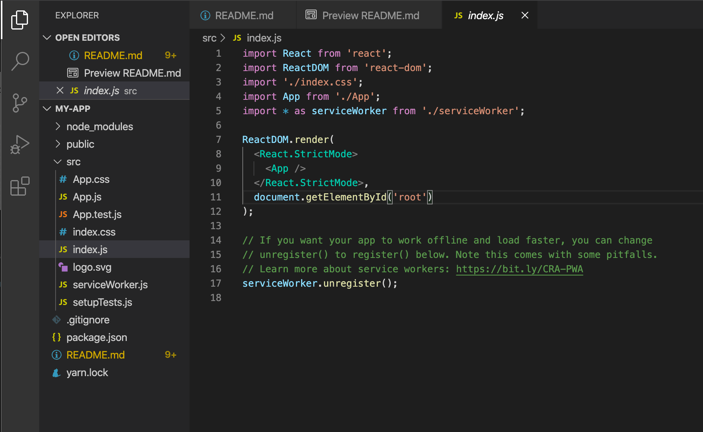
IntelliSense
As you start typing in index.js, you'll see smart suggestions or completions.
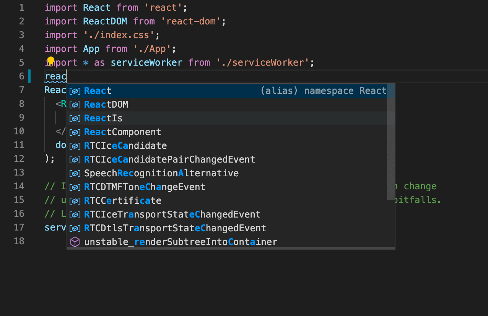
After you select a suggestion and type ., you see the types and methods on the object through IntelliSense.
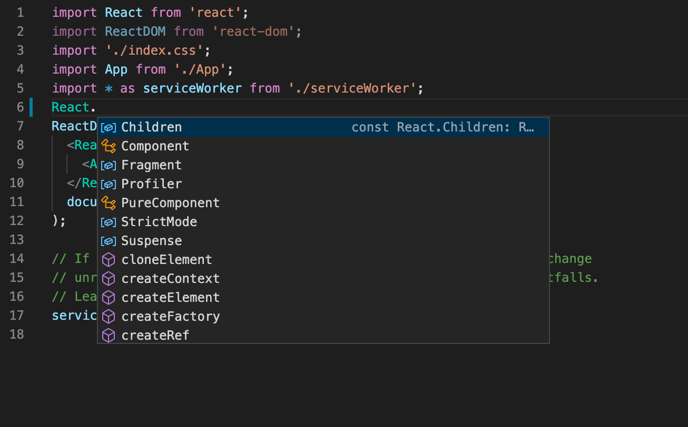
VS Code uses the TypeScript language service for its JavaScript code intelligence and it has a feature called Automatic Type Acquisition (ATA). ATA pulls down the npm Type Declaration files (*.d.ts) for the npm modules referenced in the package.json.
If you select a method, you'll also get parameter help:
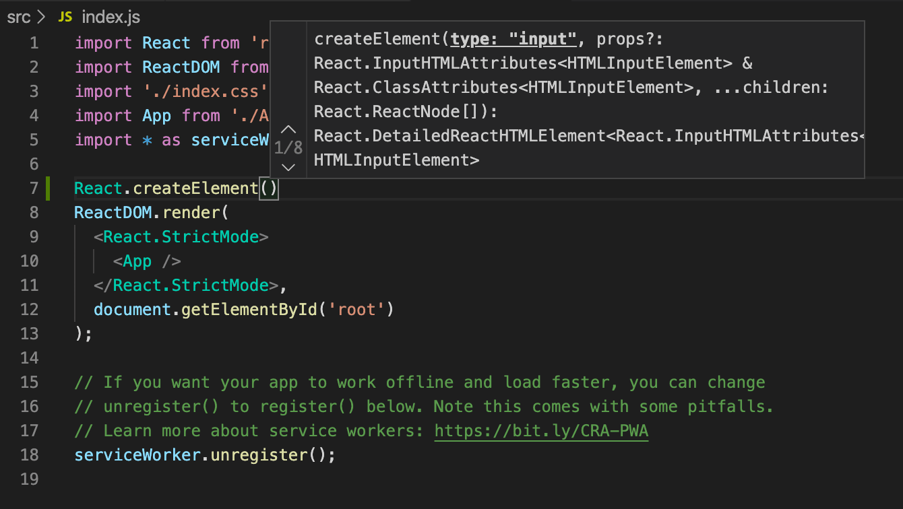
Go to Definition, Peek definition
Through the TypeScript language service, VS Code can also provide type definition information in the editor through Go to Definition (F12) or Peek Definition (⌥F12 (Windows Alt+F12, Linux Ctrl+Shift+F10)). Put the cursor over the App, right click and select Peek Definition. A Peek window will open showing the App definition from App.js.
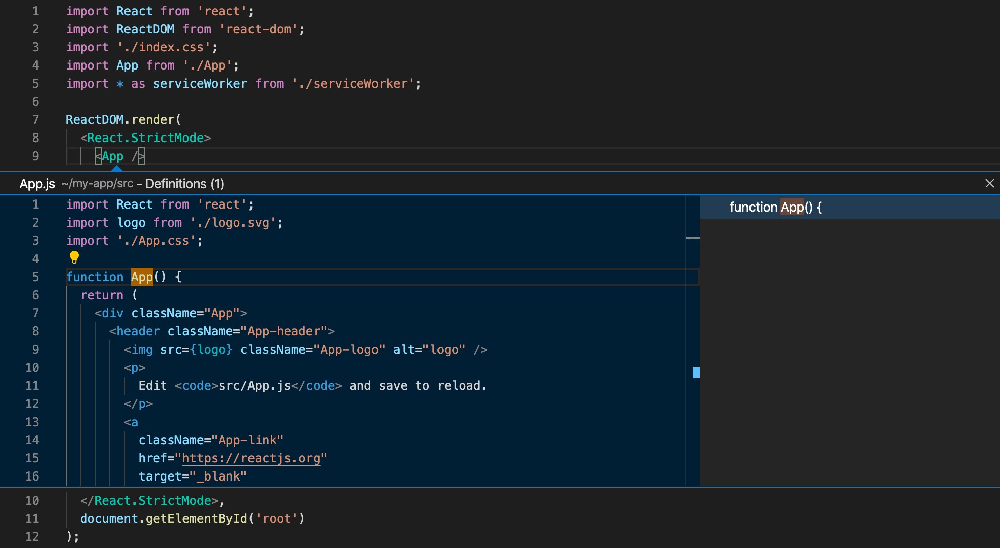
Press Escape to close the Peek window.
Hello World
Let's update the sample application to "Hello World!". Create a new H1 header with "Hello, world!" and replace the <App /> tag in ReactDOM.render with element.
import React from 'react';
import ReactDOM from 'react-dom';
import './index.css';
import App from './App';
import reportWebVitals from './reportWebVitals';
var element = React.createElement('h1', { className: 'greeting' }, 'Hello, world!');
ReactDOM.render(element, document.getElementById('root'));
reportWebVitals();
Once you save the index.js file, the running instance of the server will update the web page and you'll see "Hello World!" when you refresh your browser.
Tip: VS Code supports Auto Save, which by default saves your files after a delay. Check the Auto Save option in the File menu to turn on Auto Save or directly configure the
files.autoSaveuser setting.
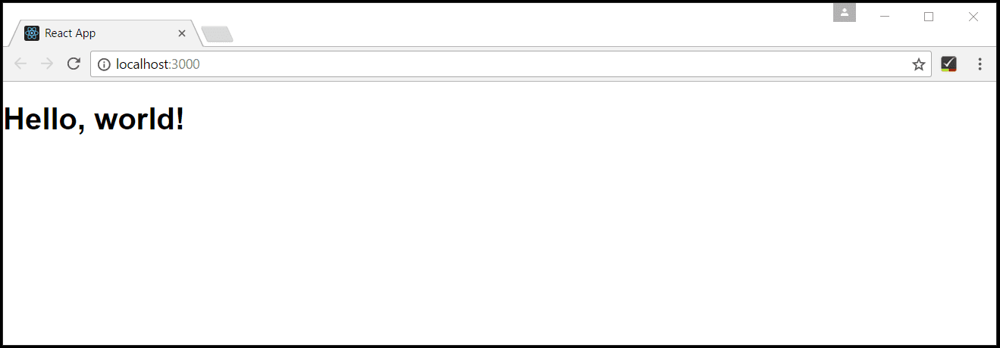
Debugging React
To debug the client side React code, we'll use the built-in JavaScript debugger.
Note: This tutorial assumes you have the Edge browser installed. If you want to debug using Chrome, replace the launch
typewithchrome. There is also a debugger for the Firefox browser.
Set a breakpoint
To set a breakpoint in index.js, click on the gutter to the left of the line numbers. This will set a breakpoint which will be visible as a red circle.
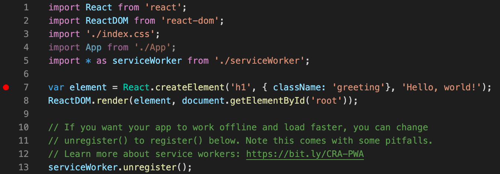
Configure the debugger
We need to initially configure the debugger. To do so, go to the Run and Debug view (⇧⌘D (Windows, Linux Ctrl+Shift+D)) and select the create a launch.json file link to create a launch.json debugger configuration file. Choose Web App (Edge) from the Select debugger dropdown list. This will create a launch.json file in a new .vscode folder in your project which includes a configuration to launch the website.
We need to make one change for our example: change the port of the url from 8080 to 3000. Your launch.json should look like this:
{
"version": "0.2.0",
"configurations": [
{
"type": "msedge",
"request": "launch",
"name": "Launch Edge against localhost",
"url": "http://localhost:3000",
"webRoot": "${workspaceFolder}"
}
]
}
Ensure that your development server is running (npm start). Then press F5 or the green arrow to launch the debugger and open a new browser instance. The source code where the breakpoint is set runs on startup before the debugger was attached, so we won't hit the breakpoint until we refresh the web page. Refresh the page and you should hit your breakpoint.
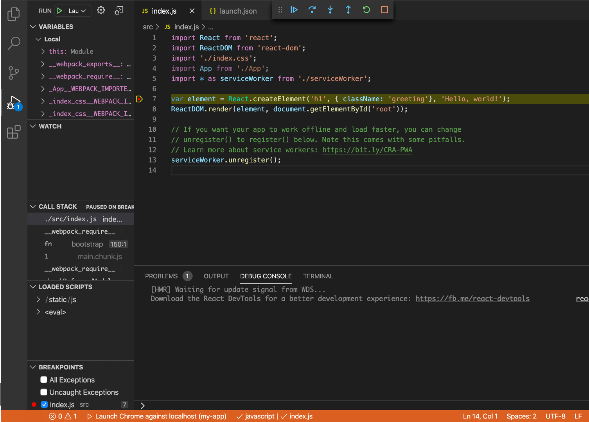
You can step through your source code (F10), inspect variables such as element, and see the call stack of the client side React application.
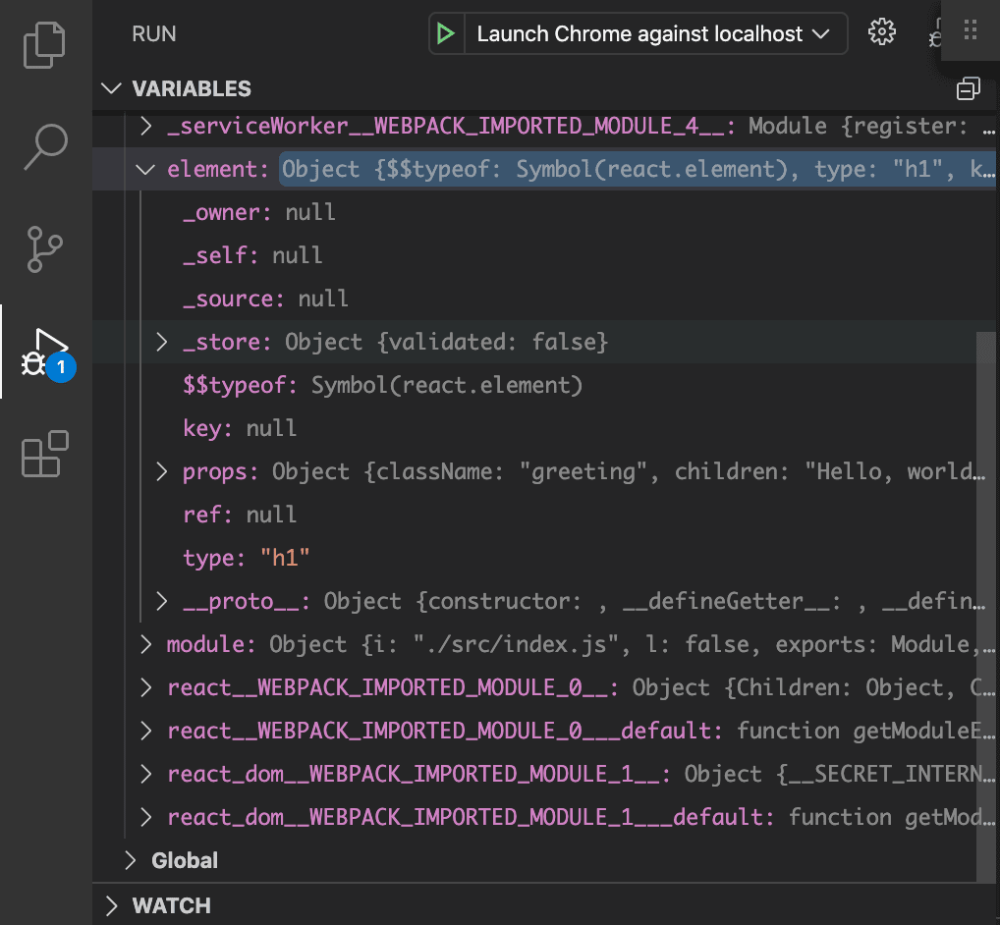
For more information about the debugger and its available options, check out our documentation on browser debugging.
Live editing and debugging
If you are using webpack together with your React app, you can have a more efficient workflow by taking advantage of webpack's HMR mechanism which enables you to have live editing and debugging directly from VS Code. You can learn more in this Live edit and debug your React apps directly from VS Code blog post and the webpack Hot Module Replacement documentation.
Linting
Linters analyze your source code and can warn you about potential problems before you run your application. The JavaScript language services included with VS Code has syntax error checking support by default, which you can see in action in the Problems panel (View > Problems ⇧⌘M (Windows, Linux Ctrl+Shift+M)).
Try making a small error in your React source code and you'll see a red squiggle and an error in the Problems panel.
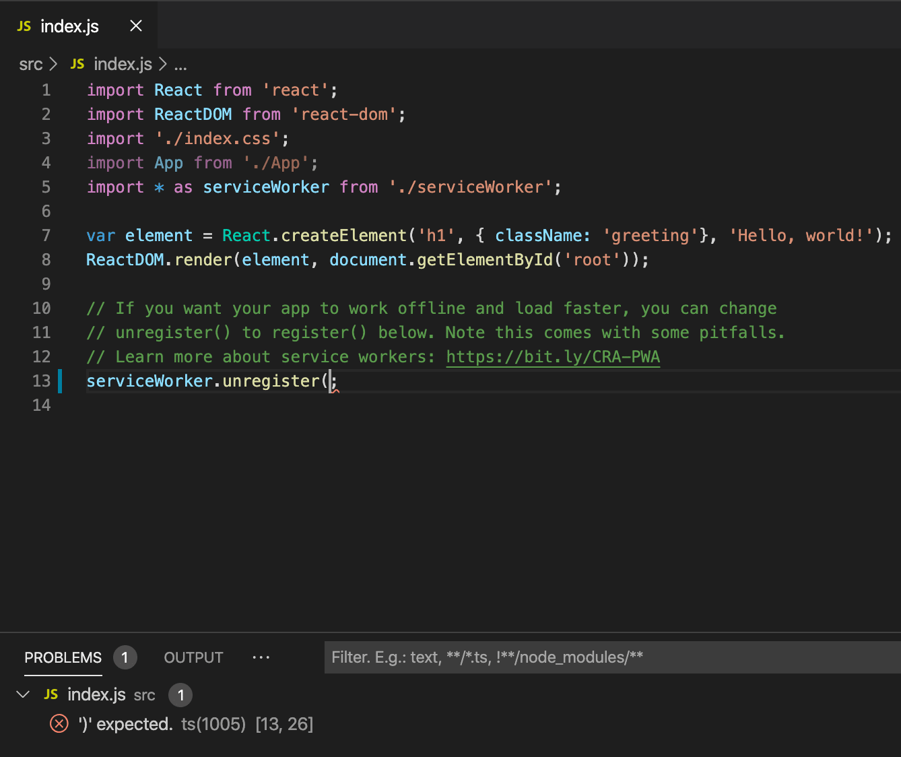
Linters can provide more sophisticated analysis, enforcing coding conventions and detecting anti-patterns. A popular JavaScript linter is ESLint. ESLint, when combined with the ESLint VS Code extension, provides a great in-product linting experience.
First, install the ESLint command-line tool:
npm install -g eslint
Then install the ESLint extension by going to the Extensions view and typing 'eslint'.
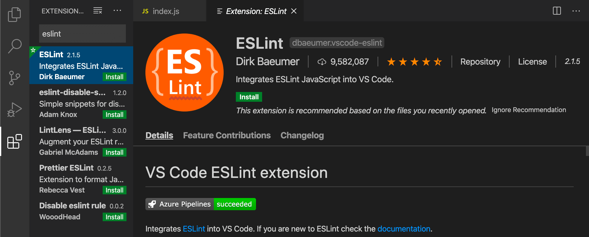
Once the ESLint extension is installed and VS Code reloaded, you'll want to create an ESLint configuration file, .eslintrc.js. You can create one using the extension's ESLint: Create ESLint configuration command from the Command Palette (⇧⌘P (Windows, Linux Ctrl+Shift+P)).
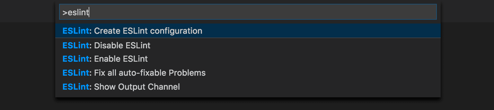
The command will prompt you to answer a series of questions in the Terminal panel. Take the defaults, and it will create a .eslintrc.js file in your project root that looks something like this:
module.exports = {
env: {
browser: true,
es2020: true
},
extends: ['eslint:recommended', 'plugin:react/recommended'],
parserOptions: {
ecmaFeatures: {
jsx: true
},
ecmaVersion: 11,
sourceType: 'module'
},
plugins: ['react'],
rules: {}
};
ESLint will now analyze open files and shows a warning in index.js about 'App' being defined but never used.
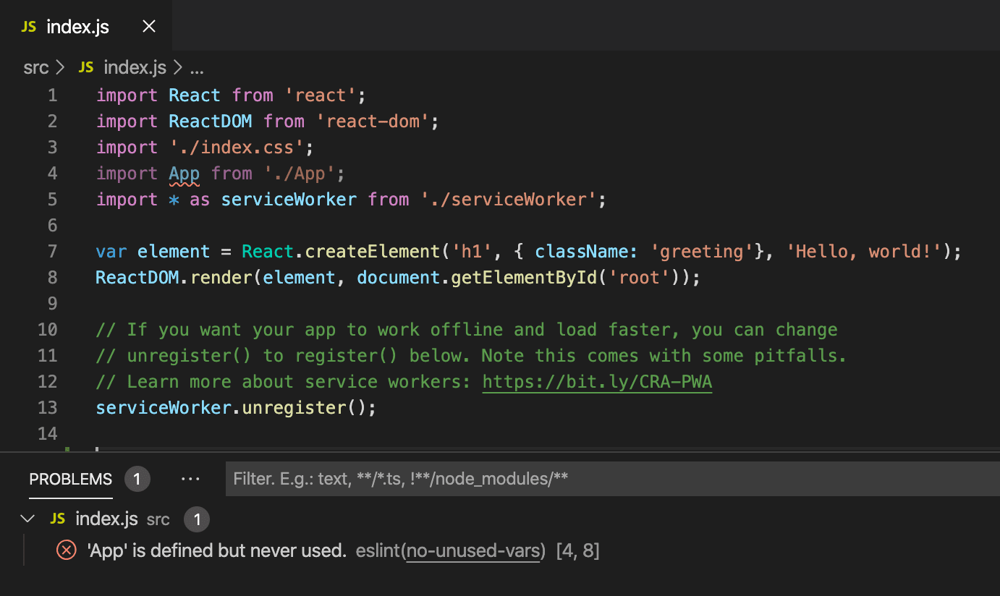
You can modify the ESLint rules in the .eslintrc.js file.
Let's add an error rule for extra semi-colons:
"rules": {
"no-extra-semi":"error"
}
Now when you mistakenly have multiple semicolons on a line, you'll see an error (red squiggle) in the editor and error entry in the Problems panel.
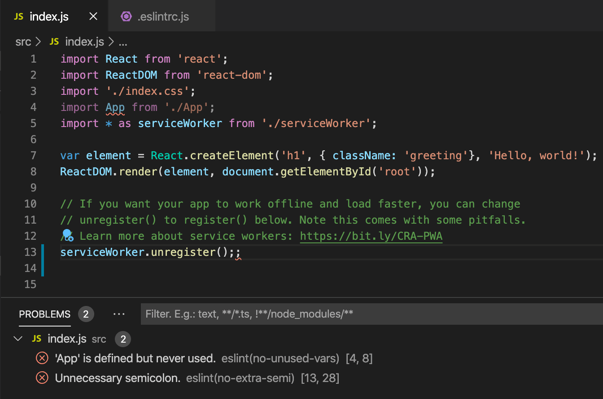
Popular Starter Kits
In this tutorial, we used the create-react-app generator to create a simple React application. There are lots of great samples and starter kits available to help build your first React application.
VS Code React Sample
This is a sample React application, which creates a simple TODO application and includes the source code for a Node.js Express server. It also shows how to use the Babel ES6 transpiler and then use webpack to bundle the site assets.
TypeScript React
If you're curious about TypeScript and React, you can also create a TypeScript version of the create-react-app application by specifying that you want to use the TypeScript template:
npx create-react-app my-app --template typescript
See the details at Adding TypeScript on the Create React App site.
Angular
Angular is another popular web framework. If you'd like to see an example of Angular working with VS Code, check out the Debugging with Angular CLI recipe. It will walk you through creating an Angular application and configuring the launch.json file for the JavaScript debugger.
Common questions
Can I get IntelliSense within declarative JSX?
Yes. For example, if you open the create-react-app project's App.js file, you can see IntelliSense within the React JSX in the render() method.
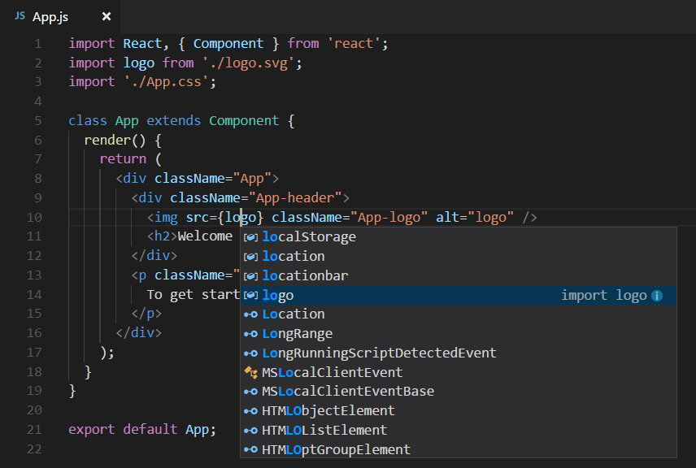